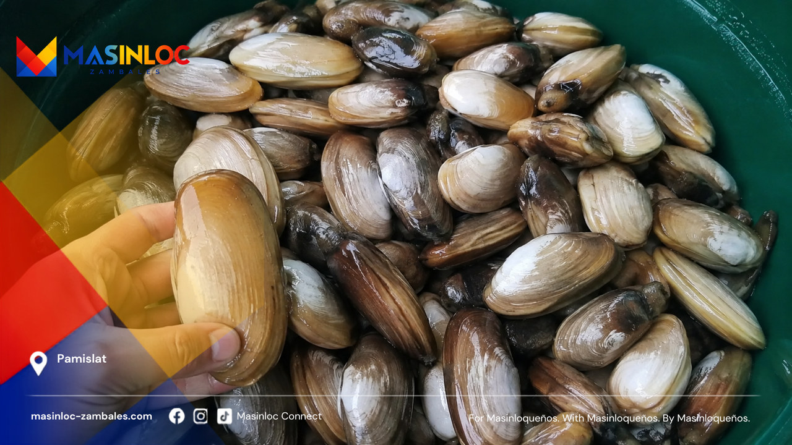

Masinloqueños to the world.
Discover Masinloc
Masinloc is a town on the western coast of Zambales that most people meet through a road sign. This is the longer answer: what the place is, what it grows and catches, what its records actually say, and which questions about it are still open.
Discover is the outward-facing half of this project. Where a claim is uncertain it is marked uncertain, and where a story is still being checked it stays a story being checked.
 Start here
Masinloc, Actually
A town of about fifty-six thousand people on the Zambales coast, sitting on a protected bay, next to a shoal that turns up in international news, under a power plant that lights a good part of Luzon. Start here.
Start here
Start here
Masinloc, Actually
A town of about fifty-six thousand people on the Zambales coast, sitting on a protected bay, next to a shoal that turns up in international news, under a power plant that lights a good part of Luzon. Start here.
Start here
Start here
If you have five minutes and no particular question.
- Masinloc, Right NowThe current numbers and the people currently holding office, with the date each one was last checked and the source it came from. This page is meant to be corrected.
- This Is Not the LGU Website, and That Is the PointAn independent project can say "we do not know yet". A municipal website generally cannot. That difference is the reason this site exists.
- Thirteen Ways to Be MasinlocThe town is thirteen barangays, and they are not interchangeable. One holds the power station, one is an island, two are the old town centre, and the rest are the reason the others work.
Places
Eight of them, photographed where they actually are.



History and culture
Including the parts that are not settled.

- The Sambal Words We Refuse to LoseSambal Tina is not a dialect of Tagalog. It is its own language, it is spoken here, and a good deal of it currently lives in the memory of people over sixty.
- Masinloc, Masingloc and the Trouble With a Good Origin StoryThere are several explanations for the town's name. Some are plausible, one is very widely repeated, and none of them is settled. This article does not pick a winner.
- Every November, Masinloc Stages a BattleBinabayani is a war dance performed in connection with the feast of San Andres. It is genuinely old, genuinely alive, and the date everybody prints for its origin cannot be found in any located source.
The sea
Protected water, and the argument about a shoal.

- Why Is There a Shoal Named After Masinloc?Bajo de Masinloc appears on Spanish-era charts under that name long before it appeared in anyone's news bulletin. What old maps can settle, and what they cannot.
How the town makes a living
Power, fruit, fish, and the people who leave.
- The Giant in BaniThree units, more than a thousand megawatts, and a set of facts about the power station in Barangay Bani that are worth knowing precisely rather than approximately.

- How Masinloc Makes a LivingA power station, a protected bay, mango season, and the people who left. Four economies in one municipality, none of which can be described without the others.